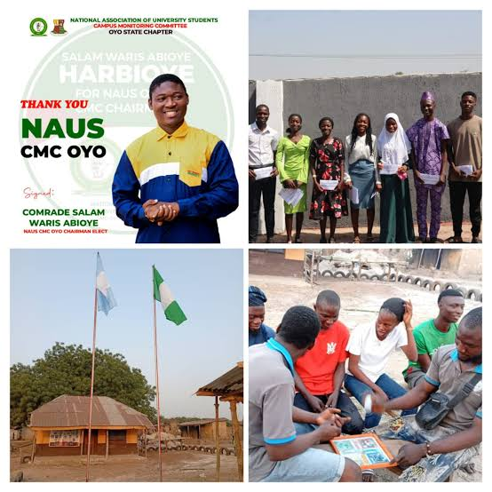

Oke-Ogun FM 96.3
Listen to the live Oke-Ogun FM broadcast from Alaga, Oyo State, featuring radio programmes, music, news, Yoruba programming and community conversations.
Oke-Ogun FM 96.3
Live radio stream • Alaga, Oyo State

Oke-Ogun FM 96.3
Regional broadcast from Alaga, Oyo StateRadio Information
- 📻 Oke-Ogun FM 96.3
- 📍 Alaga, Oyo State
- 🎧 Online live radio stream
Daily Local News & Music Desk
Listen to Oke-Ogun FM live above. If the live station stream is temporarily unavailable, you can still listen to the latest local Ipapo, Itesiwaju and Oyo news through the daily bulletin below.
Recent Broadcast Recordings
Missed a live session? Catch up on recent community interviews, educational briefings, and discussions on demand.
Ipapo College of Education Campus Construction Update
Comprehensive interview with site engineers and community leaders on project timelines.
Traditional Black Soap (Ose Abuwe) Trade Dialogue
Women cooperatives discuss production standards, organic ingredients, and regional exports.
Youth Empowerment & JAMB/WAEC Scholarship Forum
FIPSU leaders outline student welfare packages and tech mentorship drives.